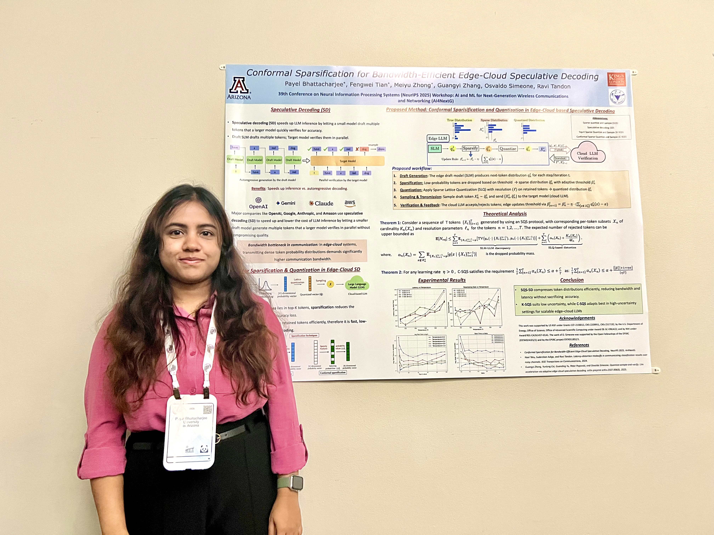
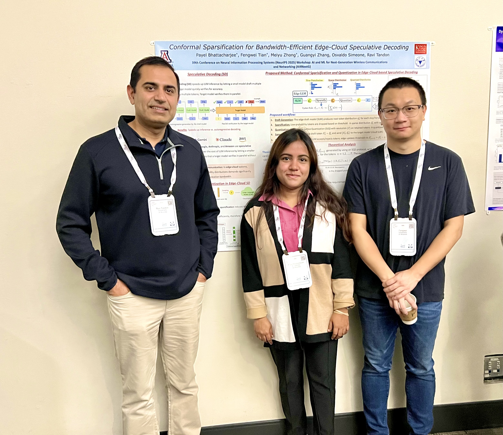

Gallery
A glimpse into recent news and activities.
Life in Tucson
Recently, I attended NeurIPS 2025 conference at San Diego, and got the opportunity to present our recent work on Conformal Sparsification for Edge-Cloud based Speculative Decoding. It was a wonderful exposure, meeting with our collaborators, colleagues across the world.


ECE GSA
Outside research, I enjoy spending time on creative and relaxing activities — from photography and cooking to small weekend trips with friends. These photos reflect the moments that keep me grounded and energized for my work.